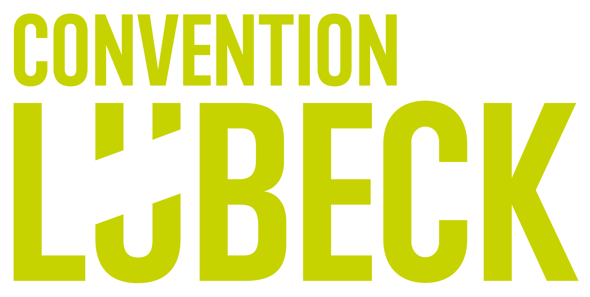
Lübeck.lokal · 9. September 2026 · Atlantic Hotel
KI-Impulse über den Dächern von Lübeck.
Video und Stimme mit KI erstellt

KI aus Lübeck.
Für Deutschland.
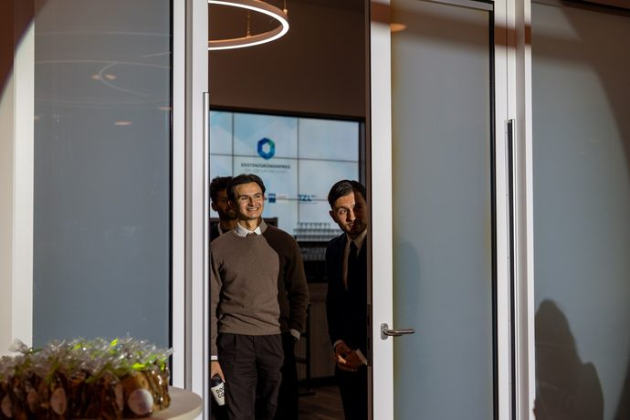


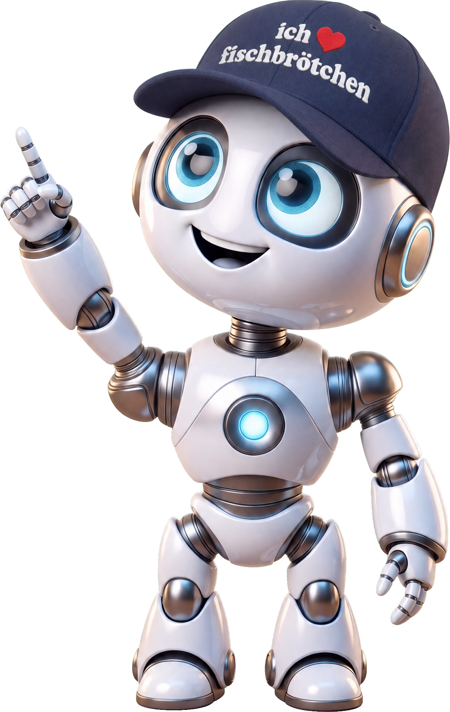
Eure Tools
Eure Fragen
Nein.
Aber sie antwortet auf alles.
Der Überblick
Assistent · Rechercheur · Bildermacher · Gedächtnis
ChatGPT, Claude, Gemini oder Copilot. Eines davon reicht.
Deep Research, Perplexity.
Nano Banana Pro, GPT Image, Canva.
Projekte in ChatGPT oder Claude, Custom GPTs, Gemini Notebook.
Eins davon benutzt ihr jeden Tag. Die anderen holt ihr, wenn ihr sie braucht.
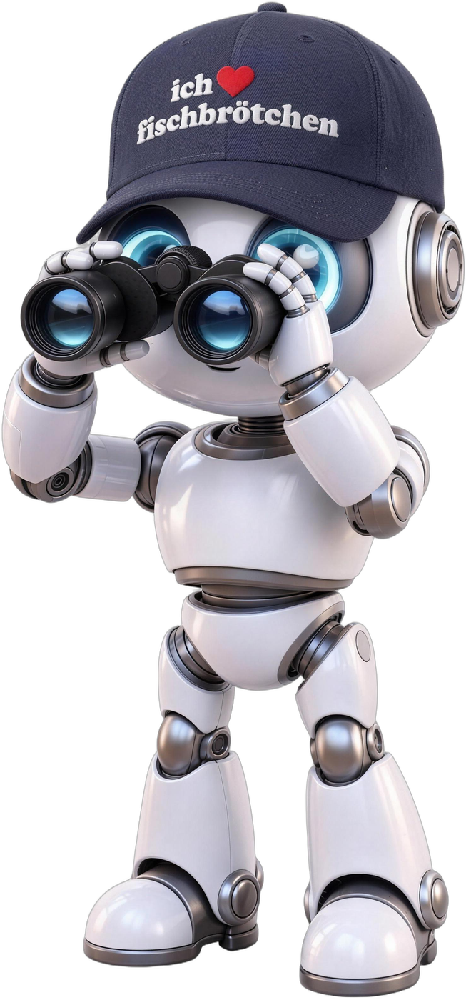
Wo anfangen?
Was die KI nicht weiß, erfindet sie.
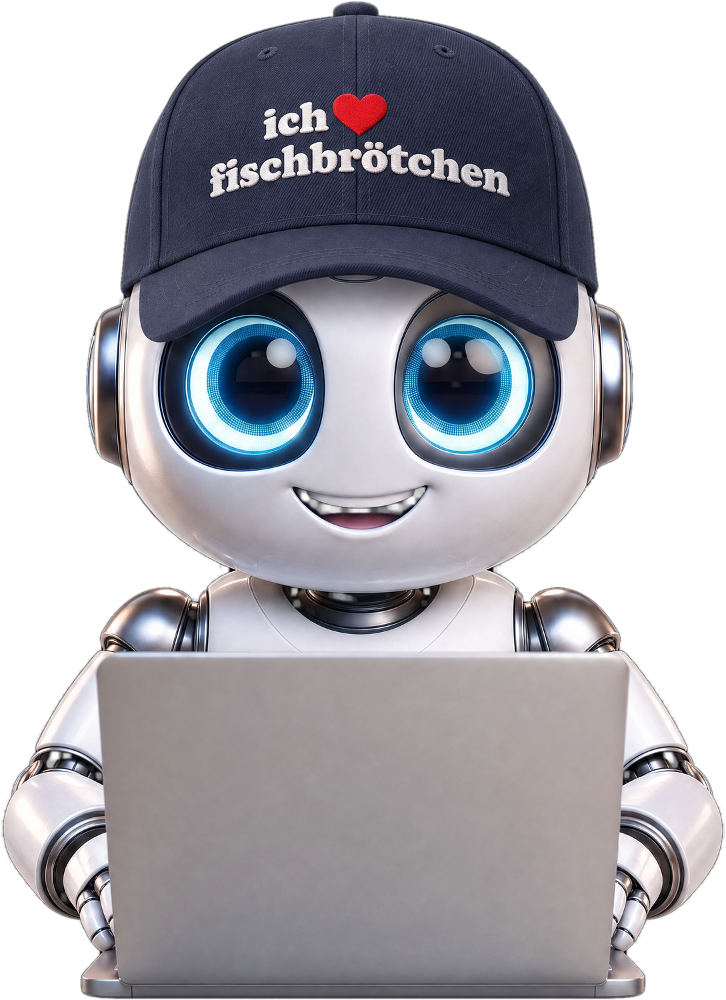
Jetzt live
Sprechen · Absage-Mail · Hotelsuche · Gala-Bild · Euer Ordner
Ins Handy gesagt, nicht getippt
ChatGPT im Sprachmodus. Die Antwort kommt laut, erst auf Dänisch, dann auf Deutsch.
Drei Hotels angefragt, eins gebucht. Die anderen beiden brauchen eine Absage, und nächstes Jahr wollt ihr dort wieder anfragen.
?
Beides live,
in einer Minute
Wir bestellen schlecht.
Dauert drei Sekunden und kommt aus dem Gedächtnis der KI. Sie erfindet gern ein Hotel dazu, das es nicht gibt.
Dauert eine halbe Minute. Die KI liest die aktuellen Seiten der Hotels und nennt, woher sie es hat.
Dauert eine Viertelstunde, liest fünfzig Seiten und schreibt einen Bericht mit Quellen.
Je wichtiger die Antwort, desto höher die Stufe.
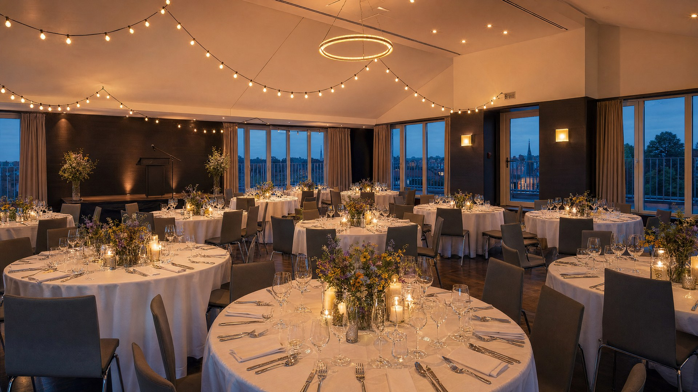
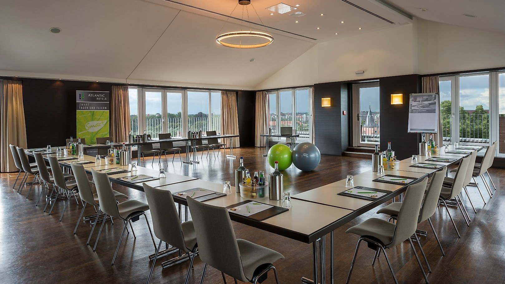
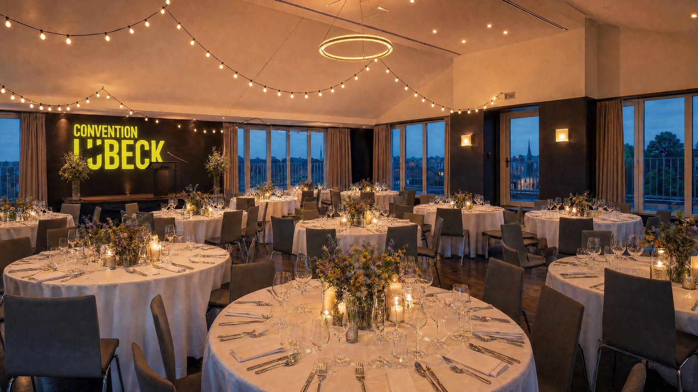
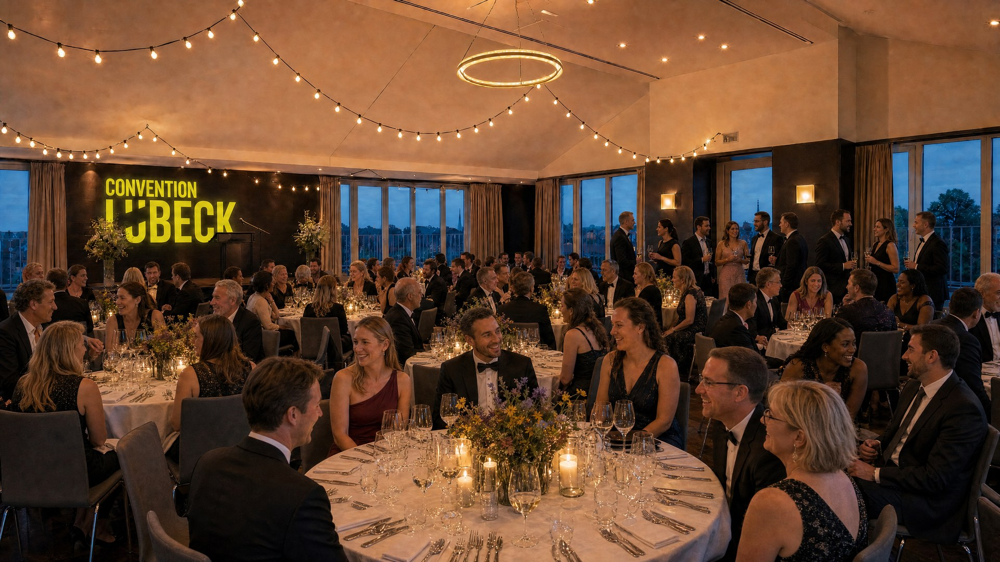
Und wer so ein Bild veröffentlicht, schreibt dazu, dass es KI ist.
Bild und Video mit KI erstellt, aus dem Foto der Roof Lounge auf convention-luebeck.com
Die Antwort zeigt, auf welcher Seite in welchem Angebot das steht.
Zwei Stimmen reden
über eure Unterlagen
Was nicht im Ordner liegt, weiß er nicht. Genau das ist der Sinn.
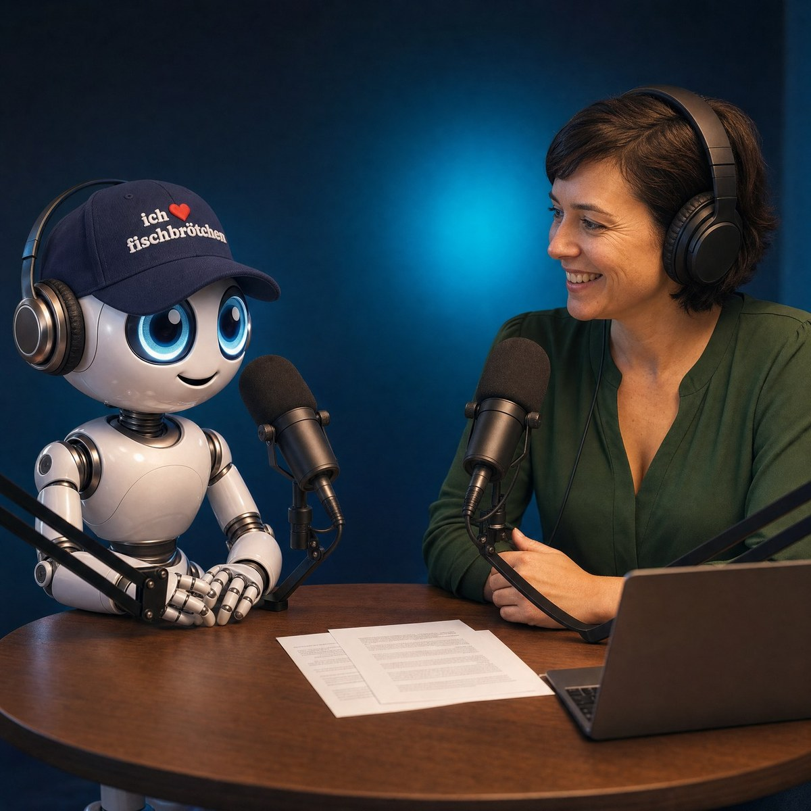
PODCAST · EIN ORDNER, FÜNF UNTERLAGEN
Der Ordner
aus Kopenhagen
Der Roboter und die Moderatorin lesen eine Anfrage, drei Hotelangebote und eine Hausordnung. Mehr wissen sie nicht, und genau das ist der Punkt.
MIT KI ERSTELLT · STIMMEN: ELEVENLABS · SKRIPT AUS DEN FÜNF DOKUMENTEN
EDGE DIGITAL × CONVENTION BUREAU LÜBECK · LÜBECK.LOKAL, 9. SEPTEMBER 2026
Zum Schluss
Datenschutz · Strom · Jobs
Der Weg drumherum: Platzhalter statt Klarnamen.
„Frau B." statt „Frau Behrens", der Text wird genauso gut.
In der Gratis-Version beim Anbieter.
In der Business-Version bei euch.
Eine Frage an die KI:
weniger als eine Minute Fernsehen.
Die beantwortet sie selbst.
bleibt gefragt.
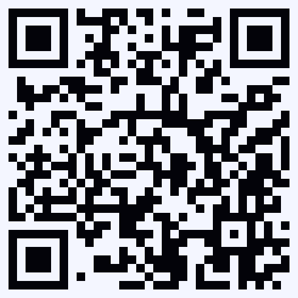
ueberblick.edge-digital.ai
EDGE Digital
Fischstraße 16 · 23552 Lübeck
Künstliche Intelligenz. Echte Wirkung.